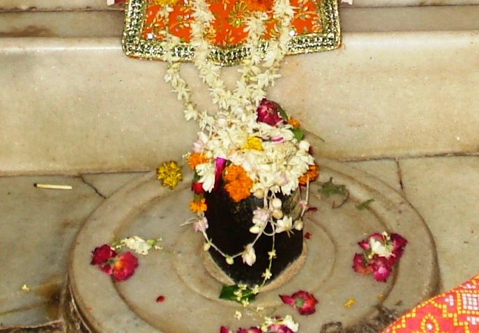

<?xml version="1.0" encoding="UTF-8"?><rss version="2.0"
	xmlns:content="http://purl.org/rss/1.0/modules/content/"
	xmlns:wfw="http://wellformedweb.org/CommentAPI/"
	xmlns:dc="http://purl.org/dc/elements/1.1/"
	xmlns:atom="http://www.w3.org/2005/Atom"
	xmlns:sy="http://purl.org/rss/1.0/modules/syndication/"
	xmlns:slash="http://purl.org/rss/1.0/modules/slash/"
	>

<channel>
	<title>Shruteeshwar &#8211; Varanasi Temples</title>
	<atom:link href="index.html" rel="self" type="application/rss+xml" />
	<link>../../../../../index.html</link>
	<description>Temples of Varanasi as referred to in Kashi Khand</description>
	<lastBuildDate>Thu, 19 Jun 2025 05:16:46 +0000</lastBuildDate>
	<language>en-US</language>
	<sy:updatePeriod>hourly</sy:updatePeriod>
	<sy:updateFrequency>1</sy:updateFrequency>
	<generator>https://wordpress.org/?v=4.6.29</generator>
	<item>
		<title>SHRUTEESHWAR</title>
		<link>../../../../../shiva-temples/shruteeshwar/index.html</link>
		<pubDate>Tue, 11 May 2010 07:27:19 +0000</pubDate>
		<dc:creator><![CDATA[admin]]></dc:creator>
				<category><![CDATA[Other Shiva Temples (S-Y)]]></category>
		<category><![CDATA[Shiva Temples]]></category>
		<category><![CDATA[Shruteeshwar]]></category>
		<category><![CDATA[mrit]]></category>

		<guid isPermaLink="false">../../../../../p=502.html</guid>
		<description><![CDATA[Kashi Khand, Chapter 33 describes various deities, Shiv Ling etc. in Kashi Kshetra. In a symbolic reference, Kashi Khand states that if all the Shiv Lings are taken as a form of a human being, Shruteeshwar will represent the head and the decoration thereof. (SHRUTEESHWAR) Devotees who worship  Shruteeshwar will lead a happy life and [&#8230;]]]></description>
				<content:encoded><![CDATA[<p>Kashi Khand, Chapter 33 describes various deities, Shiv Ling etc. in Kashi Kshetra.</p>
<p>In a symbolic reference, Kashi Khand states that if all the Shiv Lings are taken as a form of a human being, Shruteeshwar will represent the head and the decoration thereof.</p>
<p></p>
<p style="text-align: center;"><strong>(SHRUTEESHWAR)</strong></p>
<p>Devotees who worship  Shruteeshwar will lead a happy life and attain Moksha.</p>
<p><strong><span style="text-decoration: underline;">LOCATION OF SHRUTEESHWAR</span></strong></p>
<p>Shruteeshwar is located at K-53/40, near Ratneshwar, on the road leading to Vridhha Kaleshwar/ Mrityunjeshwar.  People can travel upto this place by rickshaw and the nearest landmark is Bisheshwarganj/GPO.</p>
<p>Other deities in the vicinity are Satishwar, Krithi Vaseshwar, Vridha Kaleshwar, Mahakaleshar, Mrityunjeshwar, Ratneshwar etc. details whereof are given elsewhere.</p>
<p><strong><span style="text-decoration: underline;">TYPES OF POOJA</span></strong></p>
<p>The temple is open from 06.00 a.m. to 12.00 Noon. and from 05.00 p.m. to 10.00 p.m. Aarties are held in the morning and evening.  The timings may be flexible.</p>
<p>For doing special pooja, it is advisable to consult the Poojari before hand.</p>
<h2></h2>
]]></content:encoded>
			</item>
	</channel>
</rss>
